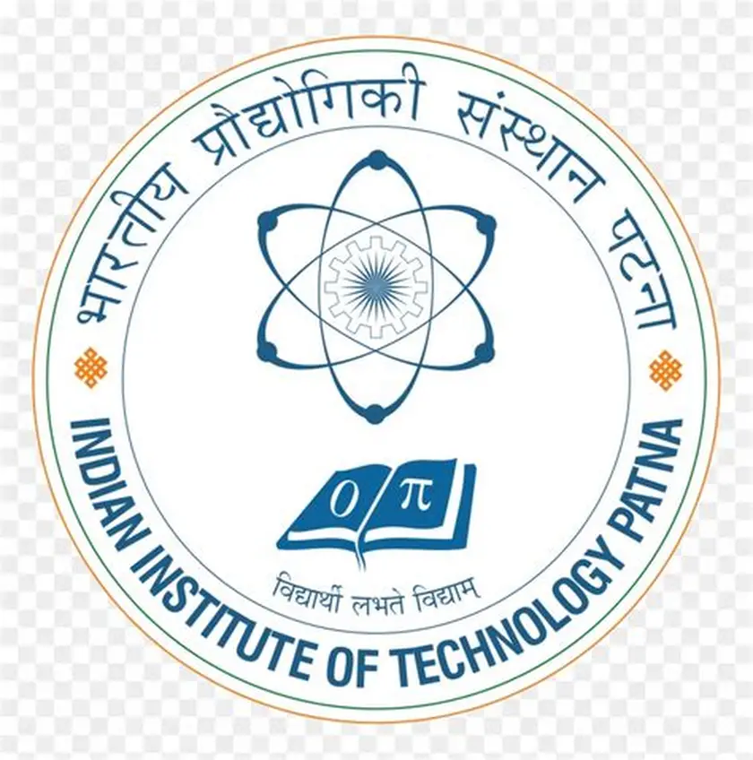
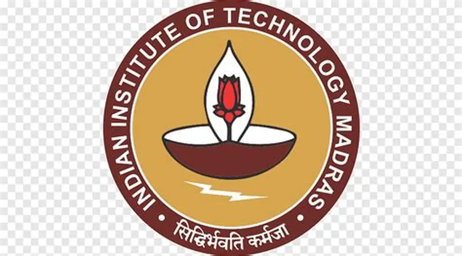
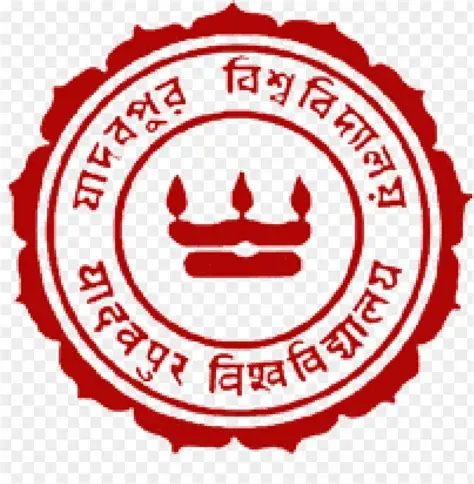
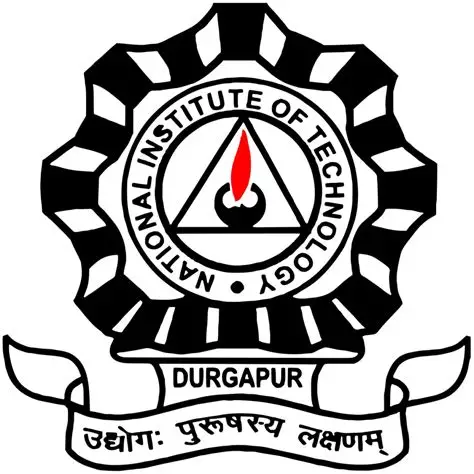

Undergraduate Research Intern
Indian Institute of Technology, Patna

Department of Computer Science and Engineering, IITP • Remote
- Under the supervision of Prof. Sriparna Saha, guided by PhD Scholar Sofia Jamil.
- Summarizing Adverse Drug Effects in Cancer Treatments using Large Language Models and Reinforcement Learning.
Undergraduate Project Intern
Autonomous Systems Laboratory, IIT Madras

Department of Engineering Design, IITM • Chennai, Tamil Nadu, India
- Under the supervision of Prof. Bijo Sebastian, Prof. Sandipan Bandyopadhyay and Prof. G. Saravana Kumar.
- Utilized Altair MotionSolve to develop and validate dynamic simulations for a company-sponsored project, focusing on the performance analysis of a novel farm vehicle.
Undergraduate Research Intern
Mechatronics Lab, IIT Delhi
Remote
- Undergraduate Research Intern under the supervision of Professor Subir K. Saha.
- Currently utilizing Visual C# to develop and enhance the backend of RoboAnalyzer, a robotics analysis and visualization software.
Undergraduate Research Intern
CMATER Lab, Jadavpur University, Kolkata

Remote
- Undergraduate Research Intern under the supervision of Professor Debotosh Bhattacharjee.
- Project II - Applying AI/ML methods to classify Cassava Leaf Diseases, supporting precision agriculture through automated disease detection.
- Project I – Formulated an ensemble-method approach to estimate SPAD (Soil Plant Analysis Development) values from rice leaf imagery as part of a precision agriculture study, with results documented in a research paper accepted to COMSYS 2025 (Warsaw, Poland).
Undergraduate Research Intern
Robotics and Automation Laboratory, IIT Patna
Bihta, Bihar, India
- Undergraduate Research Intern under the supervision of Professor Karali Patra, guided by PhD Scholar Surya Prakash Singh.
- Leveraged MATLAB and Python skills to develop the code of a transformation matrix between two given points on a free form surface to find the rotation angles and the translational matrix.
Undergraduate Research Intern
National Institute of Technology Durgapur

Durgapur, West Bengal, India
- Under the supervision of Prof. Nirmal Baran Hui (Department of Mechanical Engineering) where I am using MATLAB and Simulink to device a walking biped robot that can jump. It is a collaborative project with Mr. Debanuj Roy.
- Under the supervision of Prof. Aritro Dey (Department of Electrical Engineering) where I am developing a tracking sliding mode controller and apply the same in a UAV using MATLAB and Simulink. It is a collaborative project with Mr. Siddhartha Kundu.
- Under the supervision of Prof. Soumya Chatterjee (Department of Electrical Engineering), I am developing deep and transfer learning techniques for eye disease classification using PyTorch.